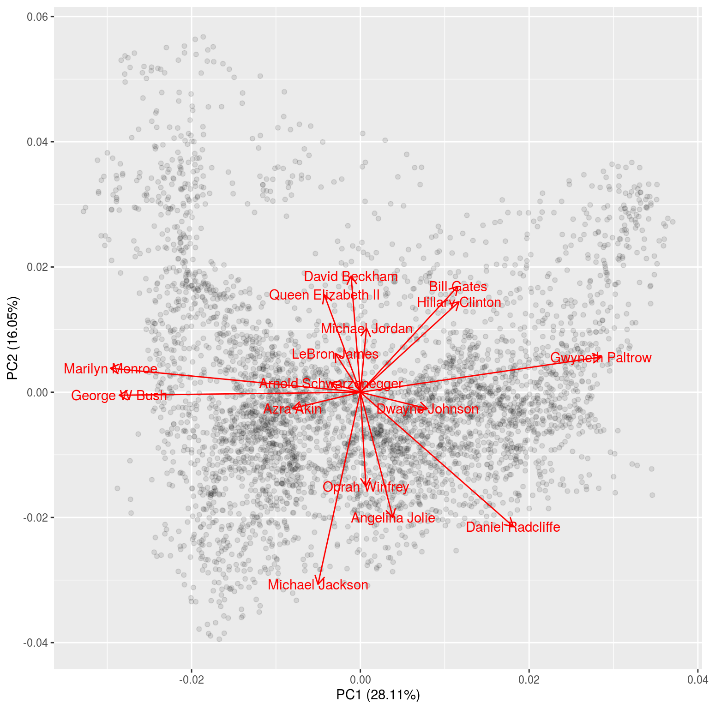
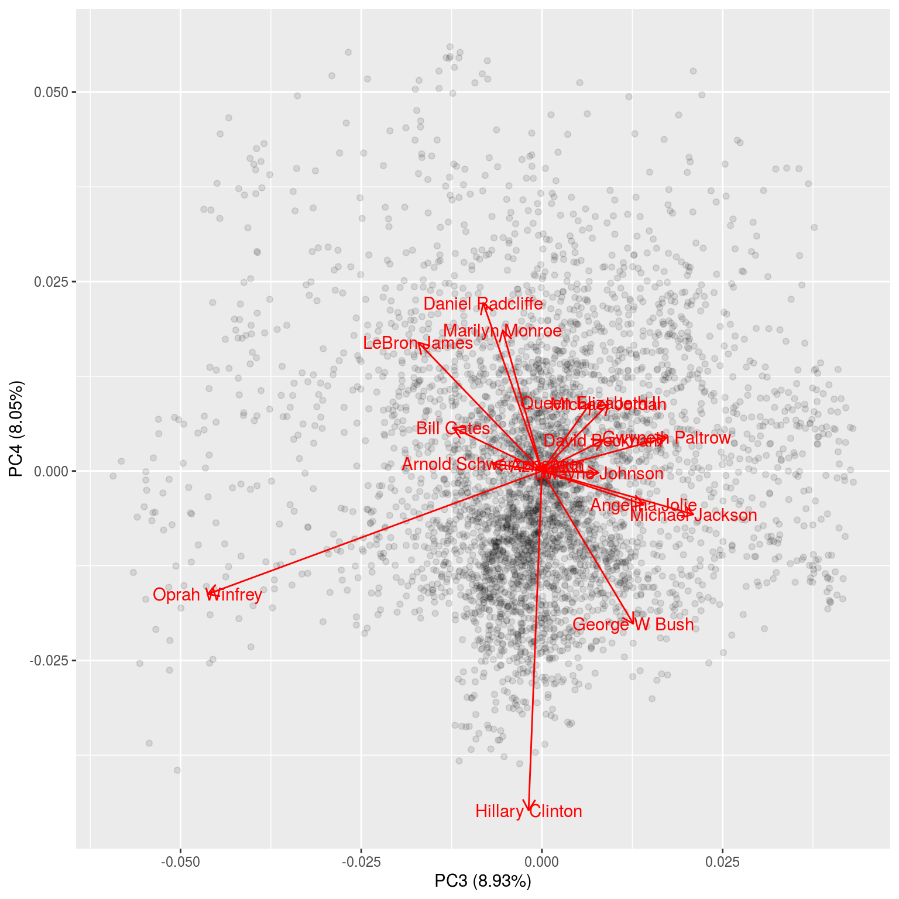
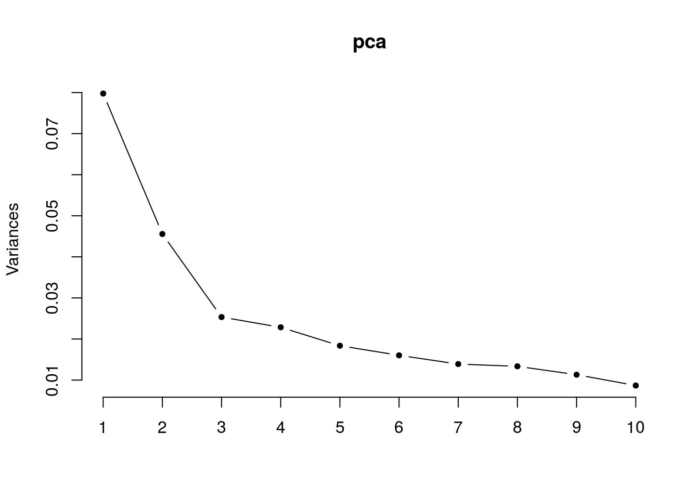
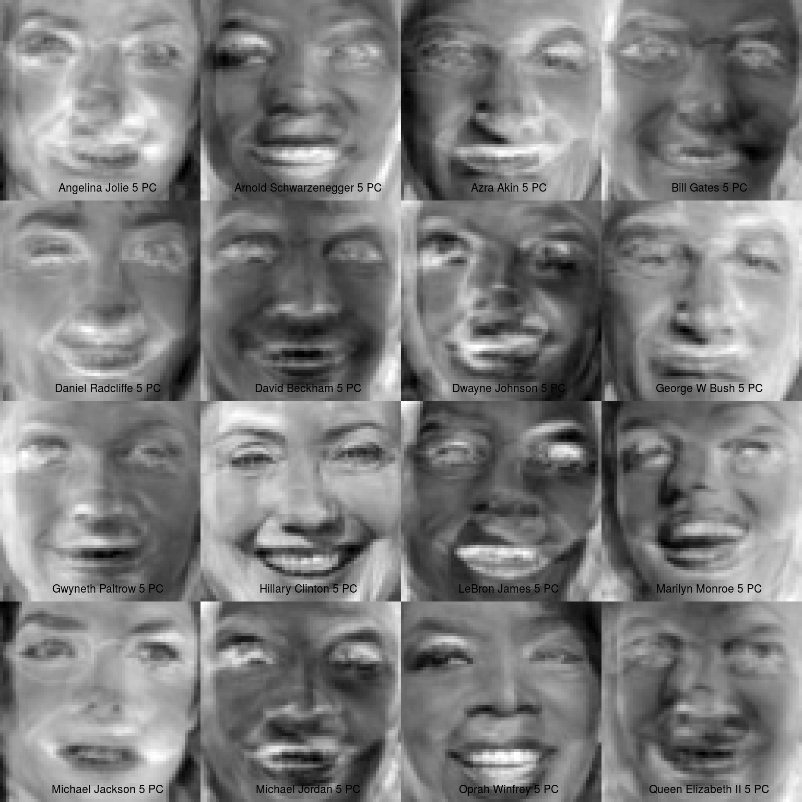

3 Eigenfaces
So what is an Eigenface? Let's fine out!
We follow this blogpost and recreate the approach in R.
First off let's get a sample of the data from the statbiscuits repository on GitHub (these data are wrangled versions of those from n0acar's GitHub repository), see here for the raw script I used to download and wrangle the data.
data_url <- "https://github.com/cmjt/statbiscuits/raw/master/swots/data/faces.RData"
load(url(data_url))The faces object is a list() with 16 named elements:
library(pixmap) ## needed to deal with the data
names(faces)
## [1] "Angelina Jolie" "Arnold Schwarzenegger" "Azra Akin"
## [4] "Bill Gates" "Daniel Radcliffe" "David Beckham"
## [7] "Dwayne Johnson" "George W Bush" "Gwyneth Paltrow"
## [10] "Hillary Clinton" "LeBron James" "Marilyn Monroe"
## [13] "Michael Jackson" "Michael Jordan" "Oprah Winfrey"
## [16] "Queen Elizabeth II"Each element is a grey pixmap image of the person named. Let's plot the pixmap images
par(mfrow = c(4,4), mar = c(0,0,0,0), oma = c(0,0,0,0))
for(i in 1:length(faces)){
plot(faces[[i]])
legend("bottom", bty = "n", names(faces[i]))
}Figure 3.1: Each face in our dataset.
3.1 Prep for PCA
Collapse each image into one column of a matrix.
## collapse the grey matrix
face_data <- lapply(faces, function(x) c(x@grey))
## each column is a face
face_data <- do.call('cbind',face_data)
colnames(face_data) <- names(faces)
## have a look at the data matrix
head(face_data)
## Angelina Jolie Arnold Schwarzenegger Azra Akin Bill Gates Daniel Radcliffe
## [1,] 0.3921569 0.4274510 0.3019608 0.8235294 0.2000000
## [2,] 0.3960784 0.4274510 0.2901961 0.8313725 0.2392157
## [3,] 0.4039216 0.4235294 0.2862745 0.8313725 0.2745098
## [4,] 0.4039216 0.4274510 0.2745098 0.8313725 0.3058824
## [5,] 0.4235294 0.4352941 0.2745098 0.8235294 0.3176471
## [6,] 0.4392157 0.4431373 0.2666667 0.8274510 0.3254902
## David Beckham Dwayne Johnson George W Bush Gwyneth Paltrow Hillary Clinton
## [1,] 0.3058824 0.2235294 0.5529412 0.7411765 0.2705882
## [2,] 0.3333333 0.2313725 0.5607843 0.7843137 0.3176471
## [3,] 0.3921569 0.2274510 0.5490196 0.8117647 0.3686275
## [4,] 0.4470588 0.2078431 0.5686275 0.8313725 0.4745098
## [5,] 0.4862745 0.2039216 0.5803922 0.8313725 0.5686275
## [6,] 0.5254902 0.1960784 0.5450980 0.8352941 0.6470588
## LeBron James Marilyn Monroe Michael Jackson Michael Jordan Oprah Winfrey
## [1,] 0.5333333 0.08627451 0.1529412 0.3372549 0.1372549
## [2,] 0.5254902 0.11764706 0.1647059 0.3411765 0.1607843
## [3,] 0.5333333 0.16470588 0.2078431 0.3411765 0.1686275
## [4,] 0.5215686 0.17647059 0.2549020 0.3450980 0.1764706
## [5,] 0.5294118 0.14117647 0.3176471 0.3411765 0.1647059
## [6,] 0.5490196 0.13333333 0.4039216 0.3137255 0.1960784
## Queen Elizabeth II
## [1,] 0.1725490
## [2,] 0.1921569
## [3,] 0.2078431
## [4,] 0.2470588
## [5,] 0.2784314
## [6,] 0.32549023.1.1 Center around mean
## center around mean
mean <- apply(face_data, 1, mean)
mean_face <- pixmapGrey(mean, 64, 64, bbox = c(0, 0, 64, 64))
plot(mean_face)Figure 3.2: The 'mean' face from the 16 in our dataset.
centered <- apply(face_data, 2, function(x) x - mean)
## centered images
par(mfrow = c(4,4), mar = c(0,0,0,0), oma = c(0,0,0,0))
for(i in 1:length(faces)){
plot(pixmapGrey(centered[,i], 64, 64, bbox = c(0, 0, 64, 64)))
legend("bottom", bty = "n", paste(names(faces[i]), "centered", sep = " "))
}Figure 3.3: Each face centered (i.e., with the mean face subtracted).
3.2 Principal Component Analysis (PCA)
pca <- prcomp(centered)
summary(pca)
## Importance of components:
## PC1 PC2 PC3 PC4 PC5 PC6 PC7
## Standard deviation 0.2824 0.2135 0.15918 0.1511 0.13552 0.12660 0.11789
## Proportion of Variance 0.2811 0.1605 0.08928 0.0805 0.06471 0.05647 0.04897
## Cumulative Proportion 0.2811 0.4416 0.53088 0.6114 0.67609 0.73256 0.78153
## PC8 PC9 PC10 PC11 PC12 PC13 PC14
## Standard deviation 0.11556 0.10636 0.09315 0.09213 0.08201 0.07425 0.06766
## Proportion of Variance 0.04705 0.03986 0.03057 0.02990 0.02370 0.01943 0.01613
## Cumulative Proportion 0.82858 0.86843 0.89901 0.92891 0.95261 0.97204 0.98817
## PC15 PC16
## Standard deviation 0.05796 2.689e-16
## Proportion of Variance 0.01183 0.000e+00
## Cumulative Proportion 1.00000 1.000e+00The PCA object, pca, contains the following information:
- the center point (
$center), - scaling (
$scale), and - standard deviation (
$sdev) of each principal component, as well as - the principal components (
$rotation), and - the values of each sample in terms of the principal components (
$x)
## for a nice biplot
library(ggfortify)
library(ggplot2)
## using autoplot
## PC1 vs PC2 by default
autoplot(pca,loadings = TRUE,loadings.label = TRUE,alpha = 0.1)
## play around with the arguments to see what they control
autoplot(pca,x = 3, y = 4,loadings = TRUE,loadings.label = TRUE,alpha = 0.1)
3.2.1 Eigenfaces (Principal Components)
## eigen faces
pcs <- pca$x
eigenfaces <- apply(pcs,2, function(x) pixmapGrey(x, 64, 64, bbox = c(0, 0, 64, 64)))
par(mfrow = c(4,4), mar = c(0,0,0,0), oma = c(0,0,0,0))
for(i in 1:length(eigenfaces)){
plot(eigenfaces[[i]])
legend("bottom", bty = "n", paste("PC", i, sep = " "))
}Figure 3.4: Each eigenface (PC1 to PC16). Note how noisy the faces get.
3.2.2 Reconstructing
3.2.2.1 How many coponents should we keep?
Each face is a weighted (loadings) combintation of the eigen faces (PCs) above, but how many PCs (eigenfaces) do we keep?
## screeplot
screeplot(pca,type = "lines", pch = 20)
str(pca$rotation)
## num [1:16, 1:16] 0.0668 -0.0609 -0.1394 0.2008 0.3148 ...
## - attr(*, "dimnames")=List of 2
## ..$ : chr [1:16] "Angelina Jolie" "Arnold Schwarzenegger" "Azra Akin" "Bill Gates" ...
## ..$ : chr [1:16] "PC1" "PC2" "PC3" "PC4" ...## 2 PCs
n_pc <- 2
recon <- pixm <- list()
for (i in 1:length(faces)){
recon[[i]] <- rowSums(pca$x[,1:n_pc]%*%pca$rotation[i,1:n_pc])
pixm[[i]] <- pixmapGrey(recon[[i]], 64, 64, bbox = c(0, 0, 64, 64))
}
## 2PC to reconstruct centered imags
par(mfrow = c(4,4), mar = c(0,0,0,0), oma = c(0,0,0,0))
for(i in 1:length(pixm)){
plot(pixm[[i]])
legend("bottom", bty = "n", paste(names(faces[i]), "2 PC", sep = " "))
}
### Hmm OK, what about 5
## 5 PCs
n_pc <- 5
recon <- pixm <- list()
for (i in 1:length(faces)){
recon[[i]] <- rowSums(pca$x[,1:n_pc]%*%pca$rotation[i,1:n_pc])
pixm[[i]] <- pixmapGrey(recon[[i]], 64, 64, bbox = c(0, 0, 64, 64))
}
## 5PC to reconstruct centered images
par(mfrow = c(4,4), mar = c(0,0,0,0), oma = c(0,0,0,0))
for(i in 1:length(pixm)){
plot(pixm[[i]])
legend("bottom", bty = "n", paste(names(faces[i]), "5 PC", sep = " "))
}
### Hmm OK, what about 10
## 10 PCs
n_pc <- 10
recon <- pixm <- list()
for (i in 1:length(faces)){
recon[[i]] <- rowSums(pca$x[,1:n_pc]%*%pca$rotation[i,1:n_pc])
pixm[[i]] <- pixmapGrey(recon[[i]], 64, 64, bbox = c(0, 0, 64, 64))
}
## 10PC to reconstruct centered images
par(mfrow = c(4,4), mar = c(0,0,0,0), oma = c(0,0,0,0))
for(i in 1:length(pixm)){
plot(pixm[[i]])
legend("bottom", bty = "n", paste(names(faces[i]), "10 PC", sep = " "))
}
## remember this is the centered image, let's add the "mean face" to reconstruct the original
par(mfrow = c(4,4), mar = c(0,0,0,0), oma = c(0,0,0,0))
for(i in 1:length(recon)){
plot(pixmapGrey(recon[[i]] + mean, 64, 64, bbox = c(0, 0, 64, 64)))
legend("bottom", bty = "n", paste(names(faces[i]), "10 PC + mean", sep = " "))
}3.3 1000 faces
Above we use only 16 images, but what if we had many, many, more. Then dimension reduction becomes much more useful. Here is a zipped archive of over 13,000 faces as grey pixmap images, as above.
We can download the archive, unzip, and read the files into R:
zip <- "http://conradsanderson.id.au/lfwcrop/lfwcrop_grey.zip"
temp <- tempfile(fileext = ".zip")
download.file(zip,destfile = temp)
tst <- unzip(temp)
unlink(temp)
all_faces <- list.files("lfwcrop_grey/faces",pattern = ".pgm", full = TRUE)
## read in a random subset of these images
## using set.seed to ensure the following is reproducible (means you will get the same subset)
set.seed(6666)
choose <- sample(1:length(all_faces), 1000, replace = FALSE)
face_set <- lapply(choose, function(x) read.pnm(all_faces[x]))
## name the object accordingly
col <- sapply(all_faces[choose], function(x) strsplit(strsplit(x,"faces/")[[1]][2],"_")[[1]])
names <- sapply(col, function(y) paste(y[-length(y)], collapse = " ")); names(names) <- NULL
head(names) ## if you've used the same seed as above this is what you should see
## [1] "Susilo Bambang Yudhoyono" "Brandon Larson"
## [3] "Kurt Warner" "Toshihiko Fukui"
## [5] "Clemente de la Vega" "Harvey Fierstein"
names(face_set) <- namesMean face (of the 1000 faces)
## collapse the grey matrix
face_data <- lapply(face_set, function(x) c(x@grey))
## each column is a face
face_data <- do.call('cbind',face_data)
colnames(face_data) <- names(face_set)
## mean face
mean <- apply(face_data, 1, mean)
mean_face <- pixmapGrey(mean, 64, 64, bbox = c(0, 0, 64, 64))
plot(mean_face)
(#fig:collapse and meanface)The 'mean' face from the 1000 in our dataset. SPOOKY
PCA
centered <- apply(face_data, 2, function(x) x - mean)
pca <- prcomp(centered)
## screeplot
screeplot(pca,type = "lines", pch = 20)
What does our first eigen face look like?
## eigen faces
pcs <- pca$x
eigenfaces <- apply(pcs,2, function(x) pixmapGrey(x, 64, 64, bbox = c(0, 0, 64, 64)))
plot(eigenfaces[[1]])
legend("bottom", bty = "n", "PC 1")Figure 3.5: First eigenface (PC1).
How many PCs would you keep? Let's try 200 (from a possible 1000) and recreate the first face in our dataset.
n_pc <- 200
recon <- rowSums(pca$x[,1:n_pc]%*%pca$rotation[1,1:n_pc])
## add the "mean face" to reconstruct the original
par(mfrow = c(1,2), mar = c(0,0,0,0), oma = c(0,0,0,0))
## original
plot(face_set[[1]])
legend("bottom", bty = "n", paste(names(face_set[1]), "original", sep = " "))
## reconstructed
plot(pixmapGrey(recon + mean, 64, 64, bbox = c(0, 0, 64, 64)))
legend("bottom", bty = "n", paste(names(face_set[1]), "reconstructed", sep = " "))